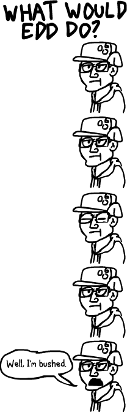

My honest opinion of you is that I think you're an inspiration to budding animators on YouTube. Though I can't draw with flash to save my life, the one thing that kept me trying is ''Think about what Edd would do.'' And that was when I was eleven or twelve. Even though I still can't animate, just thinking that still gives me confidence. You've given me the urge to keep drawing, and the dream to go into animation. Hats off to you, sir. You're amazing and I hope you kick cancer up the ass.
